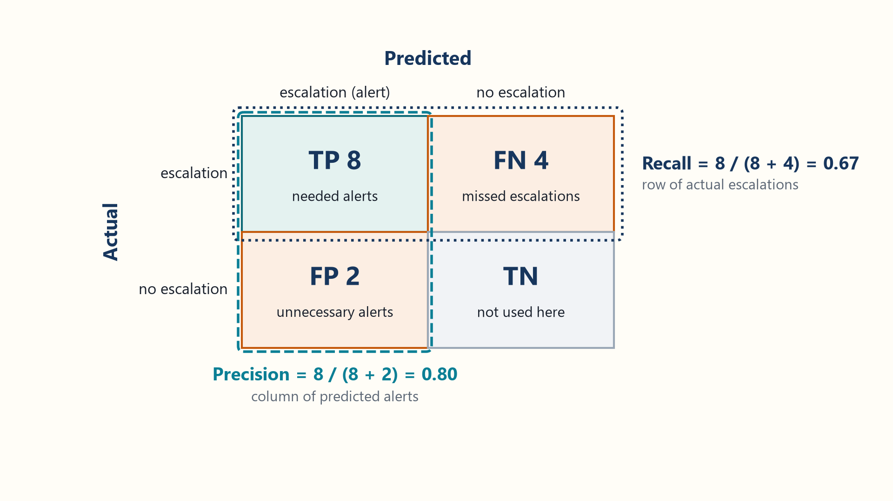

5 Measuring answer quality with metrics and judge models
Chapter 4 established the experiment before choosing how to score it. The next question is which metric fits the task and how its assumptions limit interpretation of the score. Evaluation evidence begins with deterministic classification, text, and code metrics whose assumptions match the output and error costs.
![Seven current section cards linked in reading order. A labeled actual-escalation versus actual-no-escalation matrix has TP 8 and FN 4 above FP 2 and an unspecified TN, giving precision 0.80 and recall 0.67. A separate imbalanced example has never-alert accuracy 94 percent. Text and code metrics precede benchmark protocol, version, tools and contamination. Pairwise position checks use A,B and B,A, separated from human–judge pass/fail agreement 42/50 and kappa 0.50. Independent ratings produce resolved labels. Illustrative scores 70 and 60 percent have no estimated interval; failure causes lead to a next experiment. An assumed travel-mug case contrasts care instructions and an unsupported leak-proof claim, 34/40 versus 30/40 and HOLD.](../assets/fig-m1-c05-f01.png)
Error costs determine the metric, benchmark scope limits what the score supports, and judge checks connect human agreement and failure slices to specific product questions.
5.1 Classification metrics and error costs
A golden set supplies labeled outcomes and product-relevant slices. Classification still requires a metric whose denominator matches the harm of false alarms and missed cases. A positive class is the outcome the product treats as present. For a support-routing task, requires escalation is the positive class: an alert predicts escalation, while no alert predicts non-escalation. A confusion matrix counts each actual class against each predicted class. Its four cells make the error types concrete:
- Actual escalation predicted as escalation: true positive (TP), a needed alert.
- Actual non-escalation predicted as escalation: false positive (FP), an unnecessary alert.
- Actual escalation predicted as non-escalation: false negative (FN), a missed escalation.
- Actual non-escalation predicted as non-escalation: true negative (TN), correctly no alert.
Accuracy is the share of all cases classified correctly, \((TP+TN)/(TP+FP+FN+TN)\). It hides the error types when one class dominates. If 94 of 100 tickets need no escalation, a system that never raises an alert has 94% accuracy and finds no escalations. Appendix E.1 uses this majority-class baseline.
Precision uses predicted positives as its denominator. Recall uses actual positives. F1 combines the two when neither error type should dominate silently.
Precision: The share of positive predictions that are correct. It asks how trustworthy a positive prediction is.
\[ \mathrm{Precision} = \frac{TP}{TP+FP} \tag{5.1}\]
Here, \(TP\) counts correctly predicted positives and \(FP\) counts negative cases incorrectly predicted as positive. The numerator contributes justified alerts, while the denominator contains every alert the system raised. Precision is high when few raised alerts are false.
Recall: The share of actual positive cases that the system finds. It asks how completely the system finds the cases of interest.
\[ \mathrm{Recall} = \frac{TP}{TP+FN} \tag{5.2}\]
Here, \(FN\) counts positive cases the system missed. The numerator again counts detected positives, while the denominator now contains every true positive case. Recall is high when few important cases are missed.
F1: The harmonic mean of precision and recall.
\[ F_1 = \frac{2PR}{P+R} \tag{5.3}\]
Here, \(P\) is precision and \(R\) is recall. The harmonic mean gives more weight to the smaller value: precision 0.9 and recall 0.1 give F1 = 0.18, compared with an arithmetic mean of 0.5. F1 summarizes this balance in one number, but it does not express an asymmetric error cost. Precision is undefined when the system raises no alerts, and recall is undefined when the set contains no actual positives. The reporting protocol must state how it handles those cases and F1 when both inputs are zero, rather than treating an undefined result as measured success.
Example: Escalation alerts
An evaluation set contains 12 cases that truly require escalation. The system raises 10 alerts, and 8 of those alerts are correct.
1. TP = 8. The two incorrect alerts give FP = 2. 2. Four required escalations were missed, so FN = 4. 3. Precision = 8 / (8 + 2) = 0.80. 4. Recall = 8 / (8 + 4) = 0.67. 5. F1 = 2 × 0.80 × 0.67 / (0.80 + 0.67) = 0.73 after rounding. Result: The system’s alerts are usually correct, but it misses one third of required escalations.
Interpretation: If missed escalations carry larger harm, recall and the actual missed cases matter more than the balanced F1 headline.

Choosing requires escalation as positive makes a missed escalation an FN and an unnecessary alert an FP. Reversing the positive class relabels the cells: TP and TN exchange roles, as do FP and FN. Precision and recall then measure non-escalation performance instead.
Rows represent actual classes and columns predicted classes in this figure. Axis orientation must be checked because libraries do not all display matrices identically.
Exact match is appropriate when the correct output has one canonical form or can be normalized without changing its meaning, such as an identifier or an allowed label. For a multi-class task, report per-class results and state whether an aggregate is macro, micro, or support-weighted. Macro averaging gives every class equal weight, micro averaging combines all decisions, and weighted averaging follows class frequency. A single aggregate can hide a rare but important class.
A classifier built on a language model can also report a confidence score. Suppose the prompt maps each label to one token, such as A, B, or C. If the API returns a log-probability for each of those tokens at the label position, exponentiating it gives the token’s probability under that generation distribution (Section 1.6). A top-logprob response may omit some labels. If other tokens remain possible, the label probabilities need not sum to one. Restricting generation to the label tokens, or renormalizing their probabilities, produces a distribution conditional on those labels. None of these steps establishes a calibrated probability that the chosen class is correct. A validated confidence score can support human-review routing, and moving the alert threshold trades precision against recall.
Example: Moving a confidence threshold
The escalation system above raises an alert when the probability of requires escalation is at least 0.5, which gives TP = 8, FP = 2, and FN = 4.
1. Lowering the threshold to 0.3 adds 3 correct and 4 unnecessary alerts: TP = 11, FP = 6, FN = 1. 2. Precision = 11 / (11 + 6) = 0.65. 3. Recall = 11 / (11 + 1) = 0.92. Result: The lower threshold misses one escalation instead of four, but 6 of its 17 alerts are unnecessary.
Interpretation: The threshold follows from the cost of each error type, measured on labeled cases. A change to the model or prompt requires a new threshold check.
A threshold on a confidence score assumes the score means what it says. Confidence calibration is the agreement between a model’s stated probabilities and its observed accuracy. Among cases scored about 0.9, about 90 percent should be correct. This differs from judge calibration in Sections 5.4 and 5.5, which compares a judge’s labels with human labels. Alignment training can weaken confidence calibration. In the GPT-4 technical report, the pre-trained model’s answer probabilities on a subset of MMLU matched its accuracy, and the post-trained model’s did not.1 Tian and colleagues found that confidence stated in the answer text was often better calibrated than token probabilities for models trained with human feedback.2
Both results describe other models and data. For a product, the golden set supplies the check: group cases by confidence score and compare each group’s average score with its accuracy. Suppose 50 cases score between 0.9 and 1.0, with an average of 0.95, and 40 of them are correct. The observed accuracy of 0.80 shows that the scores overstate confidence in that range.
5.2 Automated metrics for different output types
Section 5.1 covered classification metrics with fixed labels. Open-ended text can be worded in many different ways, so exact matching rejects many acceptable paraphrases. Evaluators use n-gram metrics to approximate text quality automatically.
N-gram: A run of \(n\) neighboring tokens. In “red fox runs,” “red fox” is a bigram. N-gram metrics count how many of these n-grams overlap between a candidate and a reference.
- BLEU: A machine-translation evaluation metric that combines modified n-gram precision with a brevity penalty.3
- ROUGE: A family of overlap-based measures developed for summary evaluation, including recall-oriented variants.4
Both metrics are fast, cheap, and deterministic.
Their main limit is that lexical overlap does not establish meaning. If a reference says “large automobile” and a candidate says “big car,” the wording can receive little or no n-gram credit despite expressing the same idea. Reordering has a more specific effect: unigram counts can remain unchanged, while bigram and longer n-gram overlap usually falls.
For example, the reference “The red car is small” and the candidate “The small car is red” both state that one car is red and small. With lowercase, whitespace tokenization, they contain the same five unigrams. The reference’s four bigrams are the red, red car, car is, and is small. Only car is occurs in the candidate, so its bigram precision is 1/4 despite the unchanged meaning. BLEU combines several n-gram lengths with a brevity penalty, so the exact score also depends on the scoring setup. The opposite error is possible: The red car is not small preserves most reference phrases while reversing the size claim.
BLEU and ROUGE are therefore useful as rough baseline measures when word overlap matters. They can penalize valid paraphrases and reward text that copies the reference without preserving its meaning, so neither score represents semantic truth. Embedding-based metrics such as BERTScore5 compare contextual token embeddings instead of exact strings, so they credit many paraphrases. They still measure similarity to a reference, not factual support.
For code, a test suite can execute a completion and grade its behavior. Pass@k: A code-generation metric that estimates whether at least one of k generated attempts passes the tests. Chen and colleagues6 used this measure with HumanEval, while their finite-sample estimator is more specific than the independent-trial formula used below. Under an idealized model with a fixed one-attempt success probability p and independent attempts, the probability of at least one success is:
\[ P(\mathrm{success\ by\ }k) = 1-(1-p)^k \tag{5.4}\]
Here, \(p\) is the success probability for one attempt and \(k\) is the number of independent attempts. The term \((1-p)^k\) is the probability that every attempt fails, so subtracting it from one gives the probability of at least one success. This calculation is useful when a justified value of \(p\) is already available.
Example: Independent pass at five
Suppose one generated program has a 0.30 probability of passing all hidden tests and five attempts are independent.
1. One attempt fails with probability 1 - 0.30 = 0.70. 2. All five fail with probability 0.70⁵ = 0.16807. 3. At least one succeeds with probability 1 - 0.16807 = 0.83193. Result: The idealized pass-at-five probability is about 0.832.
Interpretation: This is a probability calculation from an assumed value of \(p\), not an estimate from observed code samples. It requires independent attempts with the same success probability, and producing five answers multiplies cost.
A benchmark starts from observed samples rather than a known value of \(p\). For one programming problem, generate \(n\) samples, count the \(c\) samples that pass the same tests, and choose an evaluation value \(k\) with \(n \ge k\). The finite-sample estimator used in the Codex evaluation paper is \(\mathrm{pass}@k=1-\frac{\binom{n-c}{k}}{\binom{n}{k}}\).
The denominator counts every way to choose \(k\) samples from the \(n\) generated programs. The numerator counts choices made entirely from the \(n-c\) failures. Their ratio is the share with no passing program. Subtracting that share from one gives the estimated chance that a group of size \(k\) contains at least one success. A benchmark averages this value across its programming problems.
Example: Observed pass at two
Generate 10 programs for one problem. Three pass the tests, and the evaluation reports pass@2.
1. All pairs: \(\binom{10}{2}=45\). 2. Pairs containing only failed programs: \(\binom{7}{2}=21\). 3. Estimated pass@2: \(1-21/45=24/45\approx0.533\). Result: About 53.3 percent of the possible two-program subsets contain at least one observed success.
Interpretation: The estimate depends on the model, prompt, sampling settings, and tests used to produce the 10 outcomes. It measures success when an evaluator can identify a passing program. It does not show that a deployment without tests can select the correct program.
The estimator requires \(n \ge k\). For each problem, the \(n\) programs must be sampled independently from the same model, prompt, and generation settings, then graded with the same correctness tests. The test suite must also be strong enough to represent the required behavior. Under these assumptions, the Codex paper shows that the formula is unbiased. Substituting the observed rate \(c/n\) into \(1-(1-p)^k\) is simpler but biased. The reported result includes \(n\), \(c\), \(k\), the sampling settings, and the test-suite version so its sampling and test conditions can be checked.
A metric selects evidence for one question. Error analysis and traces are still required to find the responsible product component.
Sections 5.1 and 5.2 connected output structure and error costs to classification, text, and code metrics. Open-ended behavior still needs evaluation protocols that compare valid alternatives without treating one model opinion or public score as ground truth. Benchmark protocols establish scope. Judge models apply calibrated rubrics, human review anchors disputed criteria, and failure slices turn disagreement into diagnosis.
5.3 Benchmarks and data contamination
Task metrics score one evaluation set under one procedure. Public benchmarks package a dataset, metric, and protocol so model results can be compared, but their meaning changes as models and training corpora change. Benchmark interpretation requires separating measured capability, contamination risk, saturation, and product relevance.
Benchmark saturation occurs as many models score near a benchmark’s maximum. Small remaining score differences then provide little separation, and the benchmark may no longer expose the harder failures relevant to a product. This differs from contamination: models can solve most items without having seen them during training.
Public benchmarks target different tasks. Massive Multitask Language Understanding (MMLU) uses subject-area multiple-choice questions, the AI2 Reasoning Challenge (ARC) uses grade-school science questions, HellaSwag tests likely sentence continuations, Grade School Math 8K (GSM8K) tests worked arithmetic word problems, and Graduate-Level Google-Proof Q&A (GPQA) uses difficult science questions. HumanEval and Mostly Basic Python Problems (MBPP) execute small programming tasks against tests, while SWE-bench evaluates repository issue resolution. HELM7 shows how model conclusions can change across scenarios and measurements. A result belongs to the exact benchmark version, prompt protocol, sampling settings, tool access, and grading environment. It should not be generalized to unrelated product tasks.
Data contamination: A condition in which benchmark questions, answers, patches, or close variants enter model training or evaluation-time retrieval. A contaminated model can score well without demonstrating generalization. LiveBench8 uses frequently updated questions from recent sources and objective scoring to limit contamination. Its authors describe it as contamination-limited, because regularly refreshed questions reduce exposure and tuning risk without eliminating it.
Long-context tests also require interpretation. A needle-retrieval task measures whether one fact can be recovered from a long sequence. RULER9 found that strong performance on simple retrieval did not always carry over to harder multi-hop and aggregation tasks. A needle result therefore does not establish reasoning over all relationships in that context. Latency, cost, safety, and robustness need separate protocols.
| Benchmark question | Evidence to record | Invalid inference to avoid |
|---|---|---|
| Which capability is measured? | Dataset domain, task format, scoring rule | The model is generally intelligent or product-ready |
| Was the protocol comparable? | Prompt, tools, samples, temperature, version | Two published scores used identical conditions |
| Could training exposure inflate results? | Release date, training cutoff, leakage analysis | A high score proves unseen generalization |
| Does the result transfer? | Product eval correlation and failure slices | Public ranking predicts private workflow performance |
A benchmark name alone does not identify a score: dataset version, prompt template, few-shot examples, decoding settings, tool access, scoring code, and model checkpoint all change the number. Contamination and repeated tuning further weaken it as evidence about unseen product inputs.
Public benchmarks remain useful for broad capability screening and regression detection. The multi-scenario evaluation discussed in Section 1.7 still does not represent one product’s users, failure costs, and operating constraints. Product decisions therefore need representative local cases. Agreement between a public result and a product evaluation strengthens the conclusion. Disagreement can reflect differences in distribution or protocol, or sampling variation, and requires inspection.
For example, a stronger HumanEval result can justify placing a code model on a shortlist because the benchmark executes generated solutions against tests. It cannot approve a repository assistant for release. That decision also needs local cases covering the project’s languages, dependencies, tests, permission limits, latency, and failure costs.
5.4 Checking model judges
Verifiable tests and lexical metrics cannot grade every open-ended answer. A model judge can apply a rubric at scale, but it introduces its own preferences and nondeterminism. Candidate text can also influence the judge. Reliable use requires a written rubric, controlled presentation, human calibration, and adversarial tests.
LLM-as-a-judge: An evaluator in which a language model scores or compares candidate outputs against a rubric. Pairwise judging can be easier than assigning an absolute score because it asks which answer better satisfies explicit criteria. Single-answer grading can return per-criterion ratings and explanations that support error analysis.
Flexible judging becomes appropriate when cheaper objective checks cannot capture the behavior. Objective checks can remain in place for syntax, execution, citations, and final state.
A model judge can still misgrade otherwise comparable answers in several ways:
- Position bias: The judge may prefer the first or second answer. An evaluation protocol can swap or randomize order.
- Verbosity bias: Longer answers may appear more detailed. The evaluation specification can state a target length and penalize irrelevant content explicitly.
- Self-enhancement bias: A judge may prefer outputs from its own model family. A calibration study can compare another family or human labels.
- Prompt injection: Candidate text may instruct the judge to ignore the rubric. The evaluator can treat candidates as untrusted data and include attack cases.
- Rubric drift: Vague criteria produce inconsistent scores. A rubric can define pass/fail anchors and include calibration examples.
Zheng and colleagues10 measured position, verbosity, and self-enhancement biases in their tested model judges and prompts. The reported effects do not give a universal bias rate, so each evaluation protocol must repeat calibration with its own rubric and answer distribution.
The shortened judge_pair example takes an evaluation case, two original answers, and a judge adapter. It is not a standalone program: the application supplies render_rubric, RUBRIC_VERSION, and the adapter. The renderer builds the prompt from the task, evidence, and candidates. The adapter returns an object with integer winner_index 0 for the first displayed answer or 1 for the second, plus criterion_scores and explanation. Scores retain their displayed-answer identities. This simplified comparator requires a winner. A production rubric that allows ties needs a tie response and handling rule. The returned record maps the winner back to original answer A or B and stores the rubric version and display order. That order identifies which original answer each display-keyed score or explanation refers to.
Code example: Pairwise judging randomizes answer order and restores the original identity afterward.
import random
def judge_pair(case, answer_a, answer_b, judge, order=None):
candidates = {"A": answer_a, "B": answer_b}
display_order = tuple(order) if order is not None else tuple(
random.sample(["A", "B"], k=2)
)
if len(display_order) != 2 or set(display_order) != {"A", "B"}:
raise ValueError("order must contain A and B exactly once")
prompt = render_rubric(
task=case.task,
evidence=case.evidence,
candidate_1=candidates[display_order[0]],
candidate_2=candidates[display_order[1]],
)
verdict = judge(prompt)
if type(verdict.winner_index) is not int or verdict.winner_index not in (0, 1):
raise ValueError("judge returned an invalid winner_index")
return {
"selected": display_order[verdict.winner_index],
"display_order": list(display_order),
"criterion_scores": verdict.criterion_scores,
"explanation": verdict.explanation,
"rubric_version": RUBRIC_VERSION,
}The function rejects an invalid display order and a winner_index that is not integer 0 or 1. Mapping the index through display_order keeps answer identity separate from display position. Randomizing order distributes position effects across cases. Swapping the same pair tests whether its verdict changes. Neither check establishes that the judge is correct. The full run record must also retain the display order, judge model, prompt, and raw verdict so the scores and explanation remain interpretable. A per-criterion comparison with audited human labels reveals the judge’s disagreement patterns.
Observed agreement: The fraction of audited cases for which the human and model-judge labels match under a fixed rubric.
\[ A_o=\frac{1}{N}\sum_{i=1}^{N}\mathbb{1}(h_i=j_i) \tag{5.5}\]
Here, \(N\) is the audited case count, \(h_i\) is the human label for case \(i\), \(j_i\) is the judge label, and the indicator contributes one only when the labels match. The average reports the matching fraction. It does not adjust for agreement expected from class prevalence, so it belongs beside a confusion matrix and per-class results. Cohen’s kappa corrects for that chance agreement: \(\kappa=(A_o-A_e)/(1-A_e)\), where \(A_e\) is the agreement expected if the human and the judge labeled cases independently at their own label rates.11
Example: Human-judge agreement
An audited sample contains 50 cases, and the human and model judge produce the same criterion label on 42.
1. The indicator contributes one for each of the 42 matching rows and zero for the remaining eight. 2. The sum of indicators is 42. 3. Observed agreement is 42 / 50 = 0.84. 4. If the human and the judge each label 40 of the 50 cases as pass, chance agreement is \(0.8^2 + 0.2^2 = 0.68\), so kappa is \((0.84 - 0.68)/(1 - 0.68) = 0.50\). Result: The observed human-judge agreement is 84 percent, but kappa shows only half of the agreement possible beyond chance.
Interpretation: The eight disagreements require inspection. A judge that always chooses the majority class can obtain high agreement while failing the rare cases that matter most.
This procedure reuses judge_pair from the earlier pairwise-judge listing, including its rubric renderer and model response format. Each call returns a dictionary with the selected candidate’s original identity, so the comparison remains valid when the display order changes.
Code example: Swapped presentations expose position-sensitive verdicts before agreement is reported.
def judge_with_position_swap(case, answer_a, answer_b, judge):
first = judge_pair(case, answer_a, answer_b, judge, order=("A", "B"))
second = judge_pair(case, answer_a, answer_b, judge, order=("B", "A"))
consistent = first["selected"] == second["selected"]
return {
"selected_if_ab": first["selected"],
"selected_if_ba": second["selected"],
"position_consistent": consistent,
"final_label": first["selected"] if consistent else "human_review",
}
def observed_agreement(human_labels, judge_labels):
if not human_labels or len(human_labels) != len(judge_labels):
raise ValueError("label lists must be non-empty and equally long")
matches = sum(h == j for h, j in zip(human_labels, judge_labels))
return matches / len(human_labels)The two presentations are separate judge calls over the same task and candidates. The first displays A then B, and the second displays B then A. A judge that always returns index 0 selects A on the first call and B on the second, so the function returns human_review. A changed identity can arise from position effects or random variation. Repeating each order helps distinguish them. The function returns both identities and a consistency flag. Choosing only the favorable order would hide the disagreement.
observed_agreement compares labels with the same meaning. For pairwise choices, human and judge labels must both identify A or B. The earlier pass/fail calculation instead compares criterion-level labels from single-answer grading. It is a different use of the same agreement formula. A human_review result is an unresolved choice, not a pass or fail. Its frequency is recorded separately, with a rule stating whether agreement counts it as a disagreement or uses only resolved cases. A confusion matrix shows which labels disagree. Agreement does not establish that either label source is correct, especially under severe class imbalance. The evaluation protocol defines the response to low agreement: a revised rubric, more human labels, or human review for the affected criterion. Critical criteria remain under human review until the judge meets that rule.
5.5 Automated scores and human review
A calibrated model judge can automatically score more open-ended outputs than people can review case by case. Some judgments still require domain expertise, and some behaviors must be discovered before a fixed rubric can score them. Human review anchors quality while automated evaluation pipelines generate, run, and summarize larger behavioral test families.
Human evaluation supplies an important reference for subtle usefulness, domain correctness, and policy interpretation under a documented procedure. It is expensive and subject to disagreement. A sound procedure gives raters the same written criteria, randomizes presentation where possible, collects multiple ratings for ambiguous tasks, and records disagreement explicitly. The review by Van der Lee and colleagues12 explains how rater selection, instructions, presentation, aggregation, and reporting can change the result.
Anthropic13 released Bloom in December 2025 as an open-source tool for automated behavioral evaluations. Its official description says that Bloom turns a researcher-specified behavior into targeted scenarios and estimates the behavior’s frequency and severity. The tool runs those scenarios against a target model, scores each transcript with a judge, and produces a suite-level analysis with a meta-judge. This expands coverage systematically, though the generated scenarios and judge still require validation.
An automated pipeline can increase the number of evaluated behaviors, but each stage adds assumptions. The evaluation record retains the seed, scenario generator, model versions, transcripts, and judge configuration so those assumptions and results can be inspected.
Human calibration
Human calibration uses a subset sampled from each relevant slice and the criteria a model judge will apply at scale. It is useful when the task is open-ended, high-impact, domain-specific, or vulnerable to judge bias.
Independent raters score the subset, and a reviewer resolves disagreements. A per-criterion comparison then measures model-judge agreement against the final human labels before the rubric anchors are revised. Calibration turns an untested model-judge opinion into a measured proxy with known disagreement patterns.
Limitation: A small rater group, or one whose members have similar backgrounds, can encode shared bias. Low agreement may also mean the task is not specified clearly enough.
The protocol also defines rater qualification, blinding, and sample allocation. Low inter-rater agreement is diagnostic: it can reveal vague rubric criteria, ambiguous tasks, or unstable model output.
Outputs used to revise the rubric or judge prompt belong to calibration and development. A separate held-out human-labeled subset measures final agreement. Reporting agreement on the same outputs used to tune the judge can overstate how well it will handle new answers.
These evaluator records lead to the next question: whether an observed improvement is stable across sampled cases and repeated runs. Section 5.6 adds uncertainty and failure slices before any release decision is made.
5.6 Score uncertainty and failure analysis
Metrics and judge models produce sample scores on a fixed evaluation set. A difference such as 70 percent versus 60 percent may come from sampled cases or random variation between runs. Confidence intervals, repeated runs, and slice-level error analysis show whether the observed difference is stable and useful.
Chapter 4 introduced bootstrap intervals for experiment design. A narrow interval around a weak proxy cannot establish user value, and an aggregate interval can conceal critical slice regressions.
An interval is interpretable when the report also gives sample size, protocol, model version, and slice results.
Error analysis groups failures by cause, such as missing evidence, prompt misunderstanding, misapplied category definitions, output truncation, judge disagreement, policy conflicts, or tool errors. Each bucket should point to the responsible system component and a proposed next experiment.
| Failure bucket | Evidence to inspect | Next controlled change |
|---|---|---|
| Task ambiguity | Rater disagreement and prompt text | Success-criteria clarification or task split |
| Context omission | Serialized request and selected evidence IDs | Repair retrieval or context policy |
| Model reasoning or generation | Same context across saved model versions | Model or prompt comparison with evidence fixed |
| Validator or grader error | Raw output, parsed fields, hidden tests, judge rationale | Correct the evaluator before tuning the system |
| Slice regression | Per-slice delta and representative failures | Add representative cases, rerun the evaluation, and report each slice’s measured change |
Failure analysis is one stage of a larger evaluation loop: it follows the uncertainty estimates, and the failures it finds become new evaluation cases.
Suppose descriptions omit care instructions. The saved request contains the product name and material but omits the source record’s care field. That trace suggests a context omission rather than proving that the generation model cannot follow instructions. The next experiment adds the care field while keeping the model, prompt template, cases, and evaluator fixed. The rendered request changes because it now includes that field. A reduction in omissions supports that hypothesis. The rerun also checks factual support and other slices because the added text can change more than completeness. If omissions remain, the next trace must test another cause rather than treating the first diagnosis as settled.
The eval suite changes when new model behavior or production failures reveal a missing case. Stability means reproducible decision logic, not a frozen dataset forever.
5.7 A product-description evaluation
Product descriptions have no single reference answer, so their evaluation combines a task specification, scoring methods, calibration, uncertainty, and failure analysis. The implementation trace follows rubric definition, generation, cost, human labels, improvement, judge calibration, and full comparison.
The evaluation defines each criterion and the rule for passing all required criteria. A baseline and candidate configuration then produce descriptions for every product while the application records token use and latency. Cost calculations and manual criterion labels accompany a sampled subset. A comparison can change the prompt while keeping the generation model fixed, or change the model while keeping the prompt fixed. The evaluation records that choice and its hypothesis, calibrates a structured judge, and compares its criterion-level decisions with human labels.
Example: A product-description comparison leads to HOLD
Suppose the source record describes a 450 ml stainless-steel travel mug whose lid is dishwasher-safe and whose body must be hand-washed. It makes no leak-proof claim. The rubric requires factual support, all required care instructions, and clear wording. Before comparison, the release rule requires all three for each passing description and no unsupported claims in the safety-sensitive slice.
With the generation model fixed, the baseline prompt produces 450 ml stainless-steel travel mug. Dishwasher-safe. The candidate prompt includes a care-details instruction, and the model produces 450 ml leak-proof stainless-steel travel mug. Dishwasher-safe lid; hand-wash body. The candidate fixes the care error but adds an unsupported claim, so human reviewers still mark factual support as failed.
In this assumed 40-product comparison, the candidate passes 34 cases compared with 30 for the baseline, while two of five safety-sensitive products still contain unsupported claims. The calibrated judge agrees with the final human labels on 36 of 40 cases. Reviewers inspect the four disagreements. Decision: HOLD because the critical factual-support slice fails, even though the aggregate pass count improves. These assumed counts illustrate the decision rule. They are not measured product results.
A reproducible evaluation preserves four concrete records: the rubric and pass rule, the executable prompts and model calls, row-level manual and automated scores, and the experiment log. A prose conclusion without the configuration and per-example evidence cannot show whether an apparent improvement came from the model, prompt, evaluator, or changed data.
The following shortened listing assembles one result row from application-supplied variables. It does not generate or grade a description. usage supplies token counts and estimate_cost applies the supplied prices. The surrounding run configuration stores the case-set and price versions, latency measurements, sampling settings, and held-out/calibration assignment.
Code example: A row-level evaluation record shows where each generation and judgment came from.
record = {
"product_id": product_id,
"input_text": product_text,
"generation_model": generation_model,
"prompt_version": prompt_version,
"generated_description": description,
"input_tokens": usage.input_tokens,
"output_tokens": usage.output_tokens,
"estimated_cost_usd": estimate_cost(usage, prices),
"human_labels": human_labels,
"judge_model": judge_model,
"judge_rubric_version": rubric_version,
"judge_labels": judge_labels,
"judge_explanations": judge_explanations,
}The generation model and judge model have different roles and must be recorded separately. Per-criterion comparison is more informative than one final agreement score because a judge may be reliable on clarity but poor on factual support. The improvement cycle is valid only when the rubric and test rows remain fixed or their changes are documented.
Chapter conclusion
Evaluation distinguishes a system improvement from a persuasive anecdote. Chapters 6 and 7 apply the same discipline to retrieval: first identify whether the right evidence was found, then whether generation used it correctly.
OpenAI. (2023). GPT-4 technical report. arXiv. https://arxiv.org/abs/2303.08774. Figure 8 compares calibration on a subset of MMLU before and after post-training, using the probability of each answer option as confidence. The result describes one model family and benchmark subset.↩︎
Tian, K., Mitchell, E., Zhou, A., Sharma, A., Rafailov, R., Yao, H., Finn, C., & Manning, C. (2023). Just ask for calibration: Strategies for eliciting calibrated confidence scores from language models fine-tuned with human feedback. In Proceedings of the 2023 Conference on Empirical Methods in Natural Language Processing (pp. 5433–5442). Association for Computational Linguistics. https://doi.org/10.18653/v1/2023.emnlp-main.330. On TriviaQA, SciQ, and TruthfulQA, stated confidence often reduced calibration error by about half relative to token probabilities. The tested models predate current ones.↩︎
Papineni, K., Roukos, S., Ward, T., & Zhu, W.-J. (2002). BLEU: A method for automatic evaluation of machine translation. In Proceedings of the 40th Annual Meeting of the Association for Computational Linguistics (pp. 311–318). Association for Computational Linguistics. https://aclanthology.org/P02-1040/. BLEU is corpus-oriented and depends on tokenization and reference choice. It is not a measure of semantic truth. ↩︎
Lin, C.-Y. (2004). ROUGE: A package for automatic evaluation of summaries. In Text Summarization Branches Out (pp. 74–81). Association for Computational Linguistics. https://aclanthology.org/W04-1013/. ROUGE is a family of overlap measures, not one universal recall formula.↩︎
Zhang, T., Kishore, V., Wu, F., Weinberger, K. Q., & Artzi, Y. (2020). BERTScore: Evaluating text generation with BERT. In International Conference on Learning Representations. https://arxiv.org/abs/1904.09675. BERTScore matches contextual token embeddings between candidate and reference. It remains a reference-similarity measure.↩︎
Chen, M., Tworek, J., Jun, H., Yuan, Q., Pinto, H. P. de O., Kaplan, J., Edwards, H., Burda, Y., Joseph, N., Brockman, G., Ray, A., Puri, R., Krueger, G., Petrov, M., Khlaaf, H., Sastry, G., Mishkin, P., Chan, B., Gray, S., . . . Zaremba, W. (2021). Evaluating large language models trained on code. arXiv. https://arxiv.org/abs/2107.03374. The paper supports pass@k under its sampling and test setup. Passing tests does not establish safety or correctness outside the test suite.↩︎
Bommasani, R., Liang, P., & Lee, T. (2023). Holistic evaluation of language models. Annals of the New York Academy of Sciences, 1525(1), 140–146. https://doi.org/10.1111/nyas.15007. HELM supports multi-scenario, multi-measurement evaluation, not the representativeness of a particular product benchmark.↩︎
White, C., Dooley, S., Roberts, M., Pal, A., Feuer, B., Jain, S., Shwartz-Ziv, R., Jain, N., Saifullah, K., Dey, S., Agrawal, S., Sandha, S. S., Naidu, S., Hegde, C., LeCun, Y., Goldstein, T., Neiswanger, W., & Goldblum, M. (2024). LiveBench: A challenging, contamination-limited LLM benchmark. arXiv. https://arxiv.org/abs/2406.19314. Frequent updates reduce one contamination route but cannot prove that no item or close variant influenced training, retrieval, or tuning.↩︎
Hsieh, C.-P., Sun, S., Kriman, S., Acharya, S., Rekesh, D., Jia, F., Zhang, Y., & Ginsburg, B. (2024). RULER: What’s the real context size of your long-context language models? arXiv. https://arxiv.org/abs/2404.06654. RULER uses synthetic tasks and does not replace realistic product testing.↩︎
Zheng, L., Chiang, W.-L., Sheng, Y., Zhuang, S., Wu, Z., Zhuang, Y., Lin, Z., Li, Z., Li, D., Xing, E. P., Zhang, H., Gonzalez, J. E., & Stoica, I. (2023). Judging LLM-as-a-judge with MT-Bench and Chatbot Arena. In Advances in Neural Information Processing Systems 36 (Datasets and Benchmarks Track). https://arxiv.org/abs/2306.05685. The study assesses position, verbosity, and self-enhancement bias under tested conditions. Order randomization addresses only position bias and does not establish judge correctness.↩︎
Cohen, J. (1960). A coefficient of agreement for nominal scales. Educational and Psychological Measurement, 20(1), 37–46. https://doi.org/10.1177/001316446002000104. The paper defines chance-corrected agreement between two raters. Kappa still depends on label prevalence.↩︎
Van der Lee, C., Gatt, A., van Miltenburg, E., Wubben, S., & Krahmer, E. (2019). Best practices for the human evaluation of automatically generated text. In Proceedings of the 12th International Conference on Natural Language Generation (pp. 355–368). Association for Computational Linguistics. https://doi.org/10.18653/v1/W19-8643. ↩︎
Anthropic. (2025, December 19). Introducing Bloom: An open source tool for automated behavioral evaluations. https://www.anthropic.com/research/bloom. This is Anthropic’s official description of its own framework, not an independent comparison. ↩︎